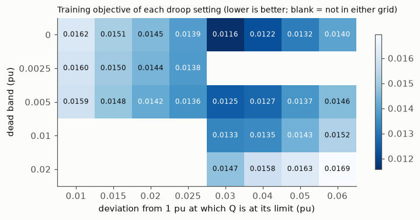

04 Seeds of the selected policy, and the tuned Volt-VAR droop#
Seeds. The selected candidate (horizon 144, 30-70% dead zone) was trained again with seeds 1 and 2, with exactly the same settings. The reporting rule was written before these runs: every seed is shown, nothing is re-selected, and if a seed fails (a) or (b) the use of active power is reported as not robust across seeds.
Droop. The original Volt-VAR droop setting was never tuned, while DPC was trained. To make the comparison fairer, the droop was tuned once, on the training part only, over a pre-specified grid (round 1), and then over an extended grid (round 2, added after seeing that the round-1 optimum lay at a corner of the grid). No tuning was done after round 2.
Read these results with the following caveats
Preliminary, validation part only. The test part is sealed and has not been evaluated. Every number comes from one network (IEEE 33-bus) and from the validation part, which was also used to select the DPC policy, so the DPC numbers are optimistically biased.
Data. Solar (Utrecht, 2014-2017) and load (Portugal, 2012-2014) are real measurements, but they come from different places and years and share no real weather. The PV size of 3.9 MW was chosen after a no-control check on the training part only (at 2.6 MW no training step exceeded 1.05 pu).
RQ2 was reworded on 2026-11-04, before any controller existed, because extreme ramps and voltage violations rarely coincide in this data (see Decisions).
Training bias. 30% of the training windows contain an extreme solar ramp.
Differences from the proposal’s eq. (16). Degradation and C-rate terms are off in every variant (“degradation off”). A terminal SoC term with a 30-70% dead zone is added and is not in eq. (16).
The safety layer goes beyond the proposal: it also limits P by the stored energy (SoC kept within 10-90%), not only by the inverter limits of eqs. (4)-(7). It does not guarantee voltage feasibility.
Active power use is marginal and not seed-robust. Voltage is regulated mostly with reactive power Q; the selected policy passes the pre-specified “P is used” threshold on 1 of 3 seeds.
The MPC baseline is a convex LinDistFlow MPC with soft voltage limits and a lossless SoC model, not the AC-OPF MPC named in the proposal, and it was not tuned. Speed comparisons are therefore against a convex MPC. The oracle MPC uses exact future data and is an upper bound, not a real controller.
Ablations. “penalty-only” includes a soft inverter-limit penalty that was added on purpose (decision D1). Variants without the safety layer can break the inverter limits; such steps are physically impossible operation and are reported as shares, not as achievable performance.
Corrections to the proposal: a discharging battery enters the net load with a minus sign, and the left side of eq. (9) is P, not 2P. Results computed before the SoC energy limit was added (2026-11-05) are superseded and not shown.
Source: results/m3_exp2_seeds.json, commit 1906fcb (private development history), code differed from that commit: False
| objective | mean |P| per battery (MW) | mean |Q| per battery (Mvar) | at S limit | VVR | end-of-day SoC | ||
|---|---|---|---|---|---|---|---|
| seed | regime | ||||||
| 0 | base (load ×0.7) | 0.00497 | 0.02520, 0.02525 | 0.350, 0.458 | 53.2% | 0.00% | 0.32 - 0.34 |
| stress (load ×1.0) | 0.01242 | 0.02505, 0.02504 | 0.431, 0.492 | 77.0% | 0.00% | 0.30 - 0.33 | |
| 1 | base (load ×0.7) | 0.00498 | 0.02681, 0.02309 | 0.348, 0.452 | 48.1% | 0.00% | 0.32 - 0.35 |
| stress (load ×1.0) | 0.01241 | 0.02758, 0.02300 | 0.432, 0.493 | 77.3% | 0.00% | 0.30 - 0.33 | |
| 2 | base (load ×0.7) | 0.00497 | 0.02526, 0.02499 | 0.347, 0.453 | 48.1% | 0.00% | 0.30 - 0.33 |
| stress (load ×1.0) | 0.01241 | 0.02549, 0.02564 | 0.433, 0.492 | 77.5% | 0.00% | 0.29 - 0.31 |
Table: every seed of the selected candidate, both regimes. VVR = share of steps with any voltage violation. “at S limit” = share of battery steps at the inverter apparent-power limit (apparent power at least 98% of the limit).
| seed | (a) P used | (b) no drift | both | min mean |P| (MW) |
|---|---|---|---|---|
| 0 | yes | yes | yes | 0.02504 |
| 1 | no | yes | no | 0.02300 |
| 2 | no | yes | no | 0.02499 |
Seeds passing (a): 1 of 3, (b): 3 of 3, both: 1 of 3. The minimum mean |P| has median 0.02499 MW and range 0.02300-0.02504 MW against the 0.025 MW threshold, so the use of active power is not robust across seeds.
Droop tuning on the training part (rounds 1 and 2)#
Source: results/m3_droop_tuning.json, commit 1906fcb (private development history), code differed from that commit: False
Source: results/m3_droop_tuning_round2.json, commit 2e0ecc5 (private development history), code differed from that commit: False

Final tuned droop: dead band 0.0 pu, full Q at 0.03 pu (round 1, training objective 0.01158). Original: dead band 0.01 pu, full Q at 0.05 pu.
Round 2 did not find a better setting than round 1 (best training objective 0.01362 in round 2 against 0.01158 in round 1). A dead band cannot be below 0, so the optimum at dead band 0 lies at a true boundary of that parameter. No tuning was done after round 2.
Note: the droop tuning objective above is computed on the training part, and the objectives below are computed on the validation part. They come from different data and must not be compared with each other.
Validation: original droop, tuned droop and DPC (all seeds)#
| objective | VVR | losses (kW) | mean |Q| (Mvar) | Q sign changes | ||
|---|---|---|---|---|---|---|
| controller | regime | |||||
| droop, original | base (load ×0.7) | 0.01022 | 0.000% | 25.5 | 0.113, 0.119 | 0.0% |
| stress (load ×1.0) | 0.01993 | 0.384% | 44.0 | 0.183, 0.215 | 0.0% | |
| droop, tuned (final) | base (load ×0.7) | 0.00808 | 0.000% | 27.1 | 0.224, 0.240 | 10.8% |
| stress (load ×1.0) | 0.01619 | 0.056% | 44.3 | 0.303, 0.347 | 8.7% | |
| DPC seed 0 | base (load ×0.7) | 0.00497 | 0.000% | 28.1 | 0.350, 0.458 | 1.0% |
| stress (load ×1.0) | 0.01242 | 0.000% | 43.1 | 0.431, 0.492 | 0.5% | |
| DPC seed 1 | base (load ×0.7) | 0.00498 | 0.000% | 27.8 | 0.348, 0.452 | 0.9% |
| stress (load ×1.0) | 0.01241 | 0.000% | 43.1 | 0.432, 0.493 | 0.4% | |
| DPC seed 2 | base (load ×0.7) | 0.00497 | 0.000% | 27.8 | 0.347, 0.453 | 0.9% |
| stress (load ×1.0) | 0.01241 | 0.000% | 43.2 | 0.433, 0.492 | 0.4% |
The tuned droop oscillates: its reactive power changes sign much more often than the original setting.
Table: validation part, both regimes. VVR = share of steps with any voltage violation.
The selected DPC seeds are at the inverter apparent-power limit on 48.1%-53.2% of battery steps in the base (load ×0.7) regime and 77.0%-77.5% of battery steps in the stress (load ×1.0) regime, so they use most of the inverter rating, mainly for reactive power.
Network losses: in the base regime DPC has 27.8-28.1 kW against 27.1 kW for the tuned droop, slightly higher, so there the objective advantage of DPC does not come from lower losses. In the stress regime DPC has 43.1-43.2 kW against 44.3 kW for the tuned droop.